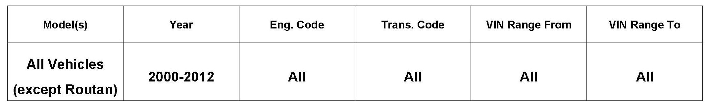
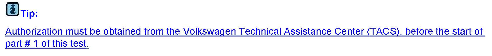
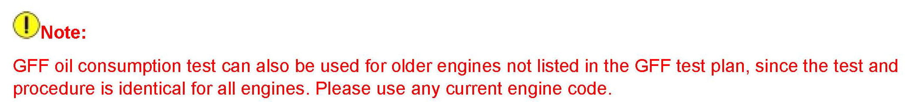
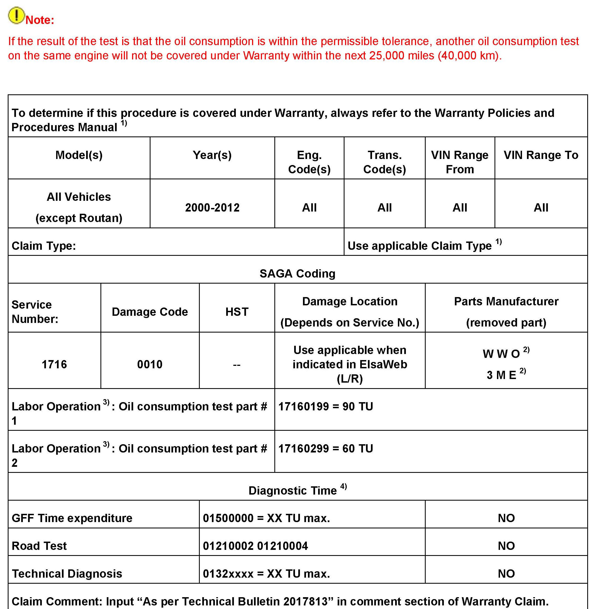
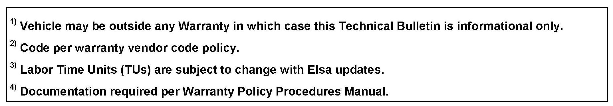
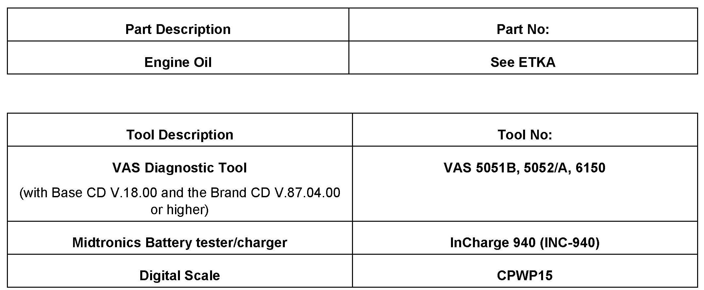

Engine - Measurement Of Oil Consumption
17 11 01March 25, 2010
2017813 Supersedes T.B. V171003 dated July 12, 2010 to include additional model year applicability and special tool purchase information.

Vehicle Information
Condition
Oil Consumption Measurement
Customer states oil consumption is higher than the Volkswagen oil consumption standard of up to 0.5 quarts per 600 miles, or 0.5 liters per 1000 km.
Technical Background
In order to provide effective lubrication and cooling of internal engine components, all internal combustion engines consume a certain amount of engine oil. Oil consumption varies from engine to engine and may change significantly over the life of the engine.
Typically, engines with specified break-in periods consume more oil during the break-in period, and the oil consumption will stabilize after the break-in period. Refer to the Owners Manual for specific break-in procedures.
Under normal conditions, the rate of oil consumption depends on the quality and viscosity of the oil, the RPM at which the engine is operated, the ambient temperature and road conditions.
Further factors are the amount of oil dilution from water condensation or fuel residue and the oxidation level of the oil.
Production Solution
Not applicable.
Service
If the customer complains that their engine is apparently consuming oil in excess of the Volkswagen oil consumption standard above, an oil consumption test must be performed using the test plan in the VAS 5051 B, 5052/A, 6150 tester, before any repair is carried out.

Tip
Using the VAS tester, navigate to the Oil consumption measurement using one of the provided methods below:
^ GFF- Function/Component Selection: Powertrain >> Engine >> Systems capable of self diagnosis >> Motronic engine control >> Functions >> General functions� Oil consumption measurements.
^ GFF- Function/Component Selection: Drivetrain >> Engine >> Lubrication >> Sub-systems, marginal conditions >> Oil consumption measurements.
1. Follow VAS 5051B, 5052/A, 6150 test protocol exactly, and document all information on oil measurement sheets.
2. Archive the VAS 5051B, 5052/A, 6150 diagnostic log and oil measurement test sheet (attached) in the dealership vehicle service file.
3. When the customer returns the vehicle to the dealership after a minimum of 630 miles (1014 km), complete part # 2 of the oil consumption test plan using the VAS 5051 The results and diagnostic log must be sent to the Volkswagen Technical Assistance Center (TACS) before any repairs are performed.
4. Advise the customer that if the low oil level warning light comes on before the 630 mile (1014 km) test is completed, the vehicle must be taken directly to the Dealership for part # 2 of the oil consumption test, regardless of the miles accumulated. The customer should not add any oil.

Note:


Warranty

Required Parts and Tools
Additional Information
All part and service references provided in this Technical Bulletin are subject to change and/or removal. Always check with your Parts Dept. and Repair Manuals for the latest information.